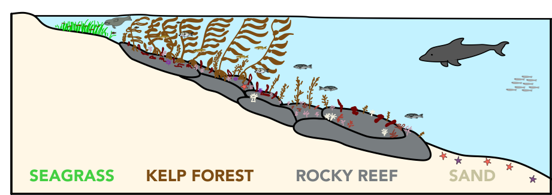

eDNA could allow the reconstruction of a whole ecosystem from a jar of seawater. (Illustration: N. Low)
University of Southhampton scientist John Shepherd once said that counting fish is like counting trees, except that they keep moving around and you can’t see them because they’re underwater. And marine biologists spend a whole lot of time, effort, and money counting fish. They put on SCUBA tanks, jump into the cold ocean, and try to count and identify as many fish as possible before they run out of air. They drag big nets through the water to collect open-ocean fish. And they puzzle through jumbles of information from fisheries, historical records, and even people’s vacation photographs to try and reconstruct fish population numbers. There is little doubt that these data are vital to understanding, protecting and managing fish populations and the ecosystems they inhabit. But most of these methods are not very efficient: They require a lot of manpower and resources to get small amounts of valuable data. Could there be a better way?
A team of scientists, including researchers from Stanford University’s Center for Ocean Solutions and Hopkins Marine Station, have been exploring one exciting new possibility – a technique called environmental DNA, or eDNA. eDNA is based on the fact that as animals move through their habitat, they leave bits of themselves behind. Anyone who lives with a dog or cat will be familiar with the large amounts of hair and dander that remain behind long after the animal has left its spot on the couch. In the same way, marine animals like fish and sea lions continuously shed dead skin cells and other bits of their tissue into the water around them. These bits of tissue are full of the animal’s DNA. Scientists can collect samples of water and search for specific sections of DNA that can be used as genetic ‘barcodes’, allowing them to identify the different species that spent time in the place where the sample was collected. It’s like CSI for marine biologists.
Scientists have previously used eDNA techniques to find rare or invasive species in smaller bodies of freshwater like lakes and streams, but the ocean presents a bigger set of challenges for the use of this technique. Currents, waves, and tides could transport animal cells and DNA over long distances, which could make it hard to tell whether the fish that shed those cells is located where the water sample was taken, or miles away. The much higher salt content in the ocean might also cause DNA to degrade faster, making it a less reliable indicator of what is out there.
Because of these challenges, it was unclear whether eDNA could be as useful in the oceans as it is in freshwater. So, the research team decided to put eDNA to the test by comparing it against the old, tried-and-true method of having SCUBA divers count fish and other vertebrate animals. And they did this test in a place where they already knew a lot about the ecology: the waters right outside Stanford’s Hopkins Marine Station.
The researchers designed their experiment to test two things. Firstly, would eDNA be able to distinguish two nearby places with different groups of animals? They tested this by taking seawater samples from four adjacent habitats that are home to different groups of fish and marine mammals: seagrass bed, kelp forest, rocky reef, and sandy bottom. The researchers figured that if currents and tides do mix up seawater and DNA over long distances, then the eDNA collected from these different neighboring habitats would all look very similar. But if the eDNA could detect the differences between these habitats that the researchers knew existed, it would mean that eDNA could be useful for answering questions about fish within their habitats.

Stanford researchers collected eDNA samples in four adjacent habitats, from seagrass beds in near-shore shallow water, to the deeper sandy bottom about 1.5 miles from shore. (Illustration: N. Low)
How well did the eDNA results match the results from the traditional counting methods? The research team made sure to collect all their eDNA samples from the same places that they counted animals using SCUBA. It is not easy to translate the amount of eDNA directly into actual numbers of an animal, so the team compared the patterns of abundance – that is, where each animal was most or least common – from the two methods. By comparing the results from eDNA to the results from the divers, they could test eDNA’s reliability.
So how did the eDNA technique do on its test? Quite well, in fact! In spite of the tides and currents, the team was able use eDNA to detect differences in the groups of species found in the four different habitats, and in places separated by no more than 200-300 feet, or about the length of a city block. Also, for most species of fish and marine mammals, eDNA found the same patterns of abundance that the divers did. For example, both methods showed that rockfish were found mostly in the kelp forest and rocky reef habitats and that harbor seals were most abundant very close to shore. The eDNA samples were even able to detect some species that were missed by SCUBA divers, like the well-camoflaged giant kelpfish.
However, there were also areas where eDNA did not fare as well. For example, it failed to detect any species of shark or ray, even though both SCUBA divers and shark tagging projects at Hopkins Marine Station confirm that these animals are commonly found in the area. The researchers think the reason could lie in the specific DNA section that they used as a barcode for identifying species. Sharks and rays have some significant differences in this section of their DNA, which may prevent it from being recognized - like having a barcode that fails to scan at the register. This could be addressed by using more than one region of DNA to identify species.
Furthermore, while eDNA is pretty good at figuring out the patterns of abundance of individual species, it still can’t reliably tell us if one species is more abundant than another species in the way that divers can. This is because some species of fish may shed more tissue and DNA into the water than other species, or they may have DNA barcodes that are more sensitive to detection by eDNA methods. There may be more rockfish than sea lions living in the kelp forest, but if each sea lion sheds as much as my neighbor’s long-haired cat, eDNA analyses may find more sea lion DNA than rockfish DNA. Divers don’t have that problem – they just count what they see!
What does this mean for eDNA and for fish-counting SCUBA divers? It is clear that eDNA won’t be replacing divers any time soon. Even with rapidly improving eDNA technology, it is unlikely that eDNA will ever give us the level of precision that divers can. But this doesn’t mean that eDNA doesn’t have an important role to play. For example, many freshwater management programs have successfully combined the strengths of eDNA and traditional sampling methods to efficiently look for invasive fish and shellfish species. eDNA is cheap and easy to collect, so it can be used to sample over very large areas at low cost (often by citizen scientist volunteers!) When the eDNA method detects something of interest, scientists can target that specific location using the more labor-intensive, traditional species-counting methods.
The Stanford team’s findings make it clear that eDNA could play a very similar role in marine environments. By combining cutting-edge new technologies like eDNA with time-tested, traditional methods like counting fish on SCUBA, we can study and monitor marine ecosystems more efficiently, and improve our ability to understand and care for our oceans.
Original article (open access): Port, J. A., O'Donnell, J. L., Romero-Maraccini, O. C., Leary, P. R., Litvin, S. Y., Nickols, K. J., Yamahara, K. M. and Kelly, R. P. (2016), Assessing vertebrate biodiversity in a kelp forest ecosystem using environmental DNA. Mol Ecol, 25: 527–541. (Link)